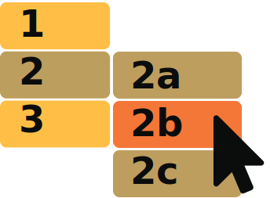

Designing for users with
physical or motor disabilities
Do make large clickable actions

Don't demand precision

People who use British Sign Language may consider this to be their first language. They may consider English to be their second language. Sentence structure differs between these two languages and therefore content should be kept simple to make it easier for BSL users to read.
Do give form fields space

Don't bunch interactions together

People who use British Sign Language may consider this to be their first language. They may consider English to be their second language. Sentence structure differs between these two languages and therefore content should be kept simple to make it easier for BSL users to read.
Do design for keyboard or speech only use
Don't make dynamic content that requires a lot of mouse movement
People who use British Sign Language may consider this to be their first language. They may consider English to be their second language. Sentence structure differs between these two languages and therefore content should be kept simple to make it easier for BSL users to read.
Do design with mobile and touchscreen in mind

Don't have short time out windows
People who use British Sign Language may consider this to be their first language. They may consider English to be their second language. Sentence structure differs between these two languages and therefore content should be kept simple to make it easier for BSL users to read.
Do provide shortcuts

Don't tire users with lots of typing and scrolling

People who use British Sign Language may consider this to be their first language. They may consider English to be their second language. Sentence structure differs between these two languages and therefore content should be kept simple to make it easier for BSL users to read.